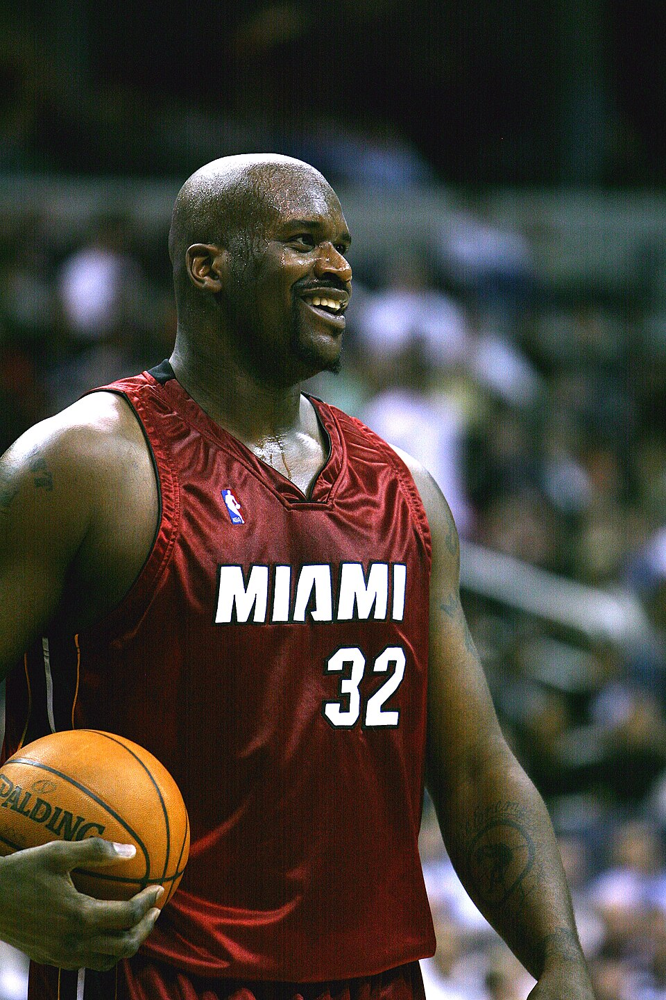

Poucos jogadores modificaram tanto a maneira de defender uma posição quanto Shaquille O’Neal. Com 2,16 metros, cerca de 147 quilos e uma combinação incomum de potência, velocidade e coordenação, o pivô norte-americano obrigava adversários a dobrar a marcação, acumular jogadores altos no elenco e, muitas vezes, recorrer às faltas como única estratégia para impedir suas enterradas.
Shaq não foi apenas um gigante fisicamente privilegiado. Ele dominava o garrafão com excelente movimentação de pés, capacidade para estabelecer posição próxima à cesta, leitura das ajudas defensivas e uma explosão surpreendente para um atleta de seu tamanho. Quando recebia a bola no lugar certo, o resultado frequentemente era uma cesta, uma falta ou as duas coisas.
Teve uma carreira de 19 temporadas, terminando a sua trajetória consagrado como membro do Hall da Fama. Seu impacto, no entanto, ultrapassou estatísticas e troféus: Shaq tornou-se personagem central na transformação da NBA em um produto global.
Shaquille Rashaun O’Neal nasceu em 6 de março de 1972, em Newark, no estado de Nova Jersey, nos Estados Unidos. Antes de chegar à NBA, destacou-se no basquete universitário defendendo a Louisiana State University, a LSU.
Em três temporadas pela universidade, Shaq acumulou 1.941 pontos, 1.217 rebotes e 412 bloqueios. Foi duas vezes escolhido para a primeira equipe All-American e ganhou projeção nacional não apenas pelos números, mas pela forma como dominava fisicamente adversários da mesma faixa etária. Seus 412 tocos continuam entre os grandes registros da história da LSU.
O desempenho universitário transformou O’Neal na escolha mais cobiçada do Draft de 1992. O Orlando Magic, então uma franquia muito jovem, utilizou a primeira escolha geral para selecionar o pivô. A chegada de Shaq mudaria rapidamente a dimensão esportiva e comercial da equipe.
A transformação do Orlando Magic
O impacto dele na NBA foi imediato. Em sua primeira temporada, conduziu o Orlando a uma campanha de 41 vitórias e 41 derrotas, uma melhora significativa para uma equipe que havia sofrido desde sua entrada na liga. O pivô recebeu o prêmio de Calouro do Ano de 1993 e rapidamente se tornou uma das principais atrações do campeonato.
O crescimento do Magic continuou. Na segunda temporada dele, a franquia chegou pela primeira vez aos playoffs. Na campanha seguinte, com um elenco que também tinha Penny Hardaway, Horace Grant, Dennis Scott e Nick Anderson, Orlando venceu 57 partidas, conquistou a Conferência Leste e alcançou as Finais da NBA de 1995.
O Magic superou o Chicago Bulls de Michael Jordan no caminho e derrotou o Indiana Pacers em uma disputada final de conferência. Na decisão do título, porém, o time jovem de Orlando foi varrido pelo experiente Houston Rockets de Hakeem Olajuwon. Mesmo sem a taça, aquela campanha confirmou que Shaq já estava entre os jogadores capazes de liderar uma franquia até o maior palco da liga.
Em quatro temporadas com O’Neal, o Orlando passou de equipe em construção para candidato ao título. O vínculo histórico foi reconhecido anos depois: a franquia aposentou a camisa 32 de Shaq, a primeira a receber essa homenagem na história do Magic.
A chegada aos Lakers e o início de uma nova era
Em 1996, Shaquille O’Neal deixou Orlando como agente livre e assinou com o Los Angeles Lakers. No mesmo período, a franquia adquiriu os direitos de Kobe Bryant, selecionado pelo Charlotte Hornets no Draft. A união dos dois mudaria o equilíbrio da NBA.
Os primeiros anos tiveram eliminações frustrantes, mudanças no comando técnico e um processo de amadurecimento. A transformação definitiva aconteceu com a chegada de Phil Jackson para a temporada 1999/2000. O treinador implantou o ataque triangular, organizou a distribuição das responsabilidades e encontrou uma estrutura capaz de potencializar Shaq e Kobe.
O’Neal viveu em 1999/2000 o auge individual de sua carreira. Liderou a NBA com média de 29,7 pontos, acrescentou 13,6 rebotes e 3 bloqueios por partida e recebeu o prêmio de MVP da temporada. O pivô conduziu os Lakers a 67 vitórias e ao melhor desempenho da liga.
Nas Finais contra o Indiana Pacers, Shaq alcançou um nível de domínio raramente visto em uma série decisiva. Foram 38 pontos, 16,7 rebotes e 2,7 bloqueios por jogo. Los Angeles venceu por 4 a 2, encerrou um jejum de títulos que durava desde 1988 e viu seu pivô receber o primeiro de três prêmios consecutivos de MVP das Finais.
O período da dinastia
Os Lakers voltaram ainda mais fortes nos playoffs de 2001. A equipe venceu 15 dos 16 jogos disputados na pós-temporada e conquistou o bicampeonato ao superar o Philadelphia 76ers nas Finais. Shaquille O’Neal permaneceu como a principal força no garrafão, enquanto Kobe Bryant assumia um papel cada vez maior na criação e na pontuação.
Em 2002, Los Angeles completou o tricampeonato consecutivo. Nas Finais contra o New Jersey Nets, Shaq registrou médias de 36,3 pontos, 12,3 rebotes, 4 assistências e 3 bloqueios, liderando uma varrida por 4 a 0 e conquistando seu terceiro MVP seguido da decisão.
A parceria entre Shaq e Kobe tornou-se uma das mais vitoriosas e complexas da história do esporte. Os dois possuíam estilos, personalidades e métodos de preparação diferentes. A competitividade produziu atritos públicos, mas também alimentou um time que chegou a quatro Finais em cinco temporadas e venceu três campeonatos.
Shaq era a referência física e o centro da estrutura ofensiva. Kobe se desenvolvia como pontuador, defensor e solucionador nos minutos decisivos. Juntos, criaram um problema quase insolúvel: concentrar a defesa no pivô abria espaço para Bryant; deslocar recursos para o perímetro deixava O’Neal em condição de atacar individualmente perto da cesta.
A importância daquela dupla também ocupa um capítulo fundamental na história de Kobe Bryant. A união terminou de maneira conturbada, mas permanece como uma das associações mais poderosas que a NBA já viu.
O quarto título em Miami
Depois da derrota para o Detroit Pistons nas Finais de 2004, os Lakers iniciaram uma profunda reformulação. Em julho daquele ano, Shaquille O’Neal foi negociado com o Miami Heat em troca de Lamar Odom, Caron Butler, Brian Grant e uma escolha futura de primeira rodada de draft.
A transferência encerrou uma passagem de oito temporadas por Los Angeles. Shaq deixou os Lakers com três títulos, três vezes MVP das Finais e um dos maiores pivôs da história da franquia.
Em Miami, O’Neal formou uma nova dupla de impacto com Dwyane Wade. Mesmo já distante do auge atlético vivido no início da década, o pivô continuava exigindo marcação especial e oferecendo presença física, rebotes, proteção de aro e eficiência perto da cesta.
O resultado chegou em 2006. O Heat derrotou o Dallas Mavericks nas Finais e conquistou o primeiro título de sua história. Wade foi o grande protagonista da decisão, mas a experiência e a presença de Shaq foram fundamentais para transformar Miami em uma equipe campeã. Era o quarto anel da carreira do pivô.
Os últimos anos na NBA
Shaquille O’Neal permaneceu no Heat até 2008. Depois, passou por Phoenix Suns, Cleveland Cavaliers e Boston Celtics. As limitações físicas se tornaram mais frequentes, e seu papel diminuiu gradualmente, mas a presença de Shaq ainda modificava confrontos e atraía enorme atenção do público.
O pivô anunciou a aposentadoria em 2011, encerrando uma trajetória de 19 temporadas e 1.207 jogos de fase regular. Ao todo, defendeu seis franquias: Orlando Magic, Los Angeles Lakers, Miami Heat, Phoenix Suns, Cleveland Cavaliers e Boston Celtics.
Principais conquistas
Os números finais ajudam a dimensionar a carreira de Shaq:
- 4 títulos da NBA: 2000, 2001, 2002 e 2006
- 3 prêmios de MVP das Finais: 2000, 2001 e 2002
- 1 prêmio de MVP da temporada regular: 2000
- 15 seleções para o All-Star Game
- 14 seleções para equipes All-NBA
- 3 seleções para equipes All-Defensive
- 2 títulos de cestinha da NBA
- Prêmio de Calouro do Ano em 1993
- Medalha de ouro olímpica em Atlanta 1996
- Integrante do Hall da Fama desde 2016
Na fase regular, O’Neal terminou com 28.596 pontos, 13.099 rebotes e 2.732 bloqueios. Suas médias foram de 23,7 pontos, 10,9 rebotes, 2,5 assistências e 2,26 tocos.
Pela seleção dos Estados Unidos, Shaq integrou a equipe campeã olímpica em Atlanta, em 1996. O time venceu seus oito jogos, e o pivô participou de todas as partidas, com média de 9,3 pontos.
A dificuldade de parar o pivô
O domínio de Shaquille O’Neal começava antes mesmo de ele receber a bola. Para impedir que estabelecesse posição dentro do garrafão, os defensores precisavam realizar um enorme esforço físico. Quando o passe chegava, Shaq podia finalizar com um giro, atacar pelo centro, usar a tabela ou simplesmente avançar em direção ao aro com potência.
Sua força frequentemente esconde uma parte importante do repertório. O pivô possuía agilidade, equilíbrio corporal, toque ao redor da cesta e boa leitura para localizar companheiros quando recebia marcação dupla. Também corria a quadra de maneira impressionante durante o auge.
No outro lado, ocupava espaço, protegia o aro e controlava rebotes. Seu tamanho obrigava adversários a alterar trajetórias e pensar duas vezes antes de atacar a cesta.
A principal fragilidade eram os lances livres. Encerrou a carreira com aproveitamento de 52,7% no fundamento. A dificuldade ajudou a popularizar o “Hack-a-Shaq”, estratégia baseada em cometer faltas intencionais para obrigá-lo a cobrar lances livres em vez de finalizar perto da cesta. Mesmo assim, poucas equipes conseguiram transformar o plano em uma solução constante.
O astro além das quadras
Shaquille O’Neal compreendeu cedo que poderia construir uma marca muito maior do que sua carreira esportiva. Sua personalidade expansiva apareceu em entrevistas, músicas, filmes, comerciais, programas de televisão e projetos empresariais.
O impacto global de Shaq também permite colocá-lo ao lado de personagens que ampliaram a popularidade do basquete em diferentes mercados, entre eles Oscar Schmidt, o Mão Santa, maior símbolo brasileiro da modalidade. Enquanto O’Neal construiu sua imagem no centro da NBA, Oscar tornou-se uma referência mundial por sua pontuação, longevidade e trajetória pela seleção brasileira.
Os inúmeros apelidos — entre eles Diesel, Superman e The Big Aristotle — ajudaram a formar uma identidade pública única. Shaq combinava intimidação dentro da quadra com humor fora dela. Essa dualidade ampliou sua popularidade e aproximou a NBA de públicos que não acompanhavam o campeonato regularmente.
Depois da aposentadoria, tornou-se uma das personalidades mais reconhecidas da televisão esportiva norte-americana. Sua interação com ex-jogadores e apresentadores manteve Shaq ligado à NBA e apresentou sua história a novas gerações.
O legado deixado
Shaq está entre os jogadores que definiram uma era. Seu domínio obrigou franquias a buscar pivôs grandes, aumentou a importância das faltas disponíveis no banco de reservas e influenciou diretamente a montagem dos elencos que precisavam enfrentar os Lakers nos playoffs.
A capacidade de combinar rendimento esportivo, influência comercial e reconhecimento mundial também apareceria na geração seguinte com LeBron James e sua longevidade na NBA. Shaq e LeBron possuem estilos completamente diferentes, mas compartilham a condição de atletas que ultrapassaram os limites da quadra e se transformaram em marcas globais.
O reconhecimento aparece nas homenagens. Os Lakers aposentaram a camisa 34, enquanto Miami e Orlando retiraram de circulação a camisa 32. A LSU também aposentou o número 33 usado pelo pivô no basquete universitário. O Magic fez de Shaq o primeiro atleta a ter uma camisa aposentada pela franquia.
O’Neal também foi incluído na equipe comemorativa dos 75 anos da NBA, reforçando sua posição entre os grandes nomes da história da liga.
Mais do que os quatro títulos e os quase 30 mil pontos, Shaquille O’Neal deixou uma imagem difícil de reproduzir. Era grande demais para a maioria dos marcadores, rápido demais para muitos pivôs e carismático demais para permanecer restrito ao basquete. No auge, não existia uma resposta segura para pará-lo. É por isso que, décadas depois de sua estreia, Shaq continua sendo lembrado como uma das forças mais dominantes que já passaram pela NBA.